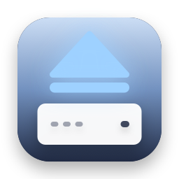
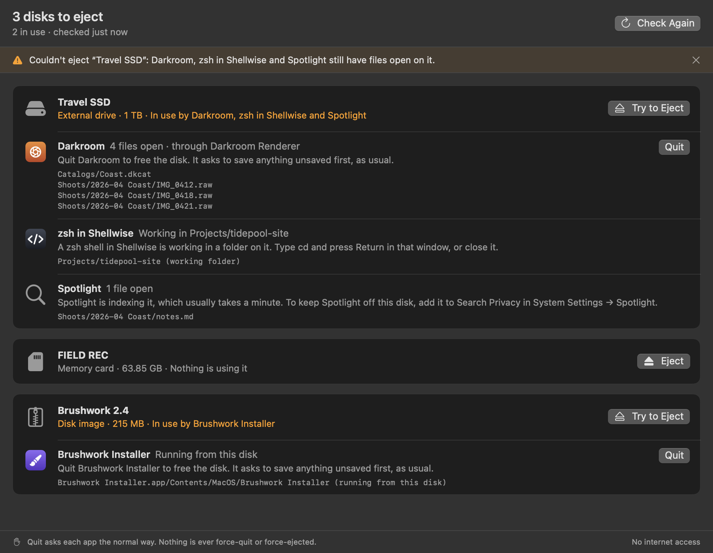

Unblock Eject
“The disk wasn't ejected because one or more programs may be using it.” Which programs? Unblock Eject shows you, quits the one you choose the normal way, and ejects.
Thanks for downloading! If it saves you a round of guessing, a star on GitHub helps other people find it.
free · open source · macos 14+ · never force-quits · no internet access
What you get

- Every disk you can eject, external drives, memory cards and disk images, with each app and process that has a file open on it, its icon and the files.
- Helpers grouped with their app, so a renderer or background helper shows up as the app you know.
- A polite Quit: the same request as the app's own Quit command, so it can ask to save first. Never forced, and only when you click.
- Eject from the same menu, the whole drive at once, the way Finder does. If it can't, it says what's still in the way.
- Extras: a window with everything at once, and an
unblock-ejectcommand line tool that prints the same list or JSON.
What it explains
- A shell in a terminal sitting in a folder on the disk: type
cdthere, or close that window. - A command still running, like
rsync: which terminal it's in, to stop it there. - Spotlight, Time Machine, Quick Look, Photos: what that part of macOS is doing, and how long it usually takes.
- A disk image stored on the disk that's still open: which one, so you eject that first.
- Finder copying or previewing something. Finder and other parts of macOS are never offered to quit.
Questions
Why won't my external drive eject?
Some app or process still has a file open on it, or is working in a folder on it. macOS won't eject a disk while that's true, so nothing is cut off mid-write, but its alert doesn't say which program it is. Unblock Eject lists them.
Does it force-quit or force eject?
Never. Quit is the normal request an app can answer by asking to save, or by saying no, and eject is the normal one macOS refuses while files are open. Nothing is quit or ejected without a click.
It says nothing is using the disk, but it still won't eject.
Parts of macOS that run as the system, like Spotlight's indexer and Time Machine's backups, are hidden from apps. Give it a minute and eject again. If Spotlight keeps doing it, add the disk to Search Privacy in System Settings → Spotlight.
Why isn't it sandboxed?
The App Sandbox hides other apps' open files and blocks quitting them, which is the whole job. So it runs outside it with no entitlements, no permissions to grant, the hardened runtime, and CI checks that it never uses the network or opens a file. The details are in SECURITY.md.
Is it like lsof, or File Locksmith?
It asks macOS the same question lsof does, then names the apps, groups their helpers and says what to do. Like PowerToys' File Locksmith on Windows, it can quit what's in the way, but for whole disks, and always politely.